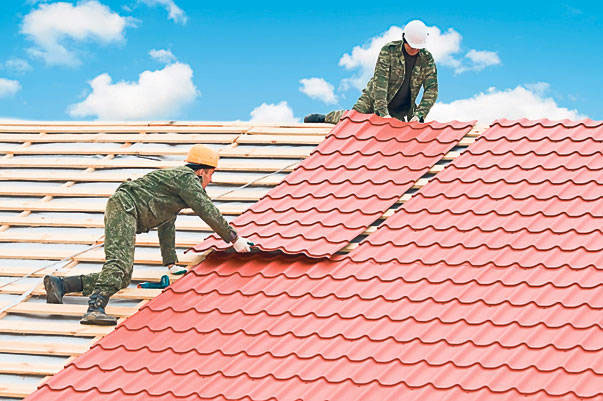

Ремонт кровли из волнистых неметаллических листов.

Рассмотрим этот ремонт на примере кровель из асбестоцементных листов. Делают эти кровли из плоских плиток или волнистых листов. Материалы для ремонта осматривают и сортируют, складывая в отдельные стопки. Листы или плитки с явными дефектами бракуются.
Ремонт и окраску следует выполнять с ходовых мостиков с набитыми на них планками, которые своими крюками зацепляются за скобы, укрепленные на коньке. Если нет скоб на коньке, то на верхнем конце мостика крепят доску, называемую захватом. Этим захватом мостик будет зацепляться за смежный скат. Жесткий мостик может раздавить плитки, поэтому под него подбивают смягчающие подкладки из войлока, в несколько раз свернутой мешковины, пакли или поролона. Во время ремонта мостик устанавливают так, чтобы он находился слева от поврежденной плитки на расстоянии 20–25 см.
Плитки заменяют так. Сначала разгибают стержни четырех противоветровых кнопок, расположенных вокруг поврежденной плитки, после этого удаляют поврежденную плитку.
В том случае, когда плита удерживается крепежными гвоздями, головки которых находятся под вышеуложенными плитками, заменяемую плитку раскалывают и удаляют куски. По извлеченным кускам измеряют расстояние от кромок плитки до крепежных отверстий и новую плитку обрезают на эту величину.
Подготовленную таким образом плитку ставят на место, для чего приходится приподнимать боковые и верхние плитки. Это делает человек со второго мостика. Уложенную плитку закрепляют внизу противоветровой кнопкой и одним шурупом, который находится на плите немного выше ее середины. Во время завинчивания шурупа плитка может лопнуть, поэтому под нее подкладывают кусок фанеры или картон нужной толщины. На шуруп, точнее под его головку, надевают две шайбы, сначала металлическую, затем из прорезиненной ткани или резины на суриковой замазке. После завертывания шурупа края шайб промазывают замазкой.
Если приходится заменять большое количество плиток, то их разбирают от конька к карнизу, выдергивают из опалубки все гвозди, если требуется, исправляют настил, обметают его и заново восстанавливают покрытие.
Если ремонтируются воротники дымовых труб и слуховых окон, то заменяемые плитки или их части, выходящие на края фартуков, допускается укладывать с перекрытием на 60–70 мм. Их крепят шурупами так, как описано выше.
Волнистые листы с отколотыми краями, с трещинами и другими серьезными дефектами заменяют новыми. С двух сторон заменяемого листа укладывают мостики и надежно закрепляют за коньковые скобы. Поперек мостиков укладывают доску, с которой приходится работать. Для снятия поврежденного листа прежде всего удаляют крепежные материалы – гвозди или шурупы. Для ослабления нажима на кромку снимаемого листа гвозди или шурупы среднего листа поднимают на 1020 мм. Когда крепление выполнено на первой волне, то гвозди или шурупы временно извлекают. Во всех смежных листах вышележащего ряда также ослабляют крепления, а если необходимо, то извлекают.
Извлекая гвозди гвоздодером, под его лапу нужно подкладывать доску. Новый лист укладывают вдвоем. Один приподнимает ослабленные сбоку и сверху листы, а другой вначале укладывает лист на перекрываемую кромку соседнего листа, а затем подвигает его к коньку. Установив точно лист, его крепят так же, как и остальные. Все извлеченные или ослабленные шурупы или гвозди ставят на место. Шайбы также смазывают суриковой замазкой и ею же прошпаклевывают вокруг них.
При смене поврежденных коньков их прежде всего освобождают от креплений, который удаляют, ставят конек на место и закрепляют его.
Листы крепят гвоздями или шурупами. В плитках или волнистых листах делают отверстия путем сверления, а не пробивки пробойником или крупным гвоздем, т. к. при этом листы колются или образуются трещины.
Требование
Совершенно недопустимо оставлять в кровле неплотности в местах нахлестки листов. Через эти неплотности на чердак проникает вода. Все неплотности нужно надежно герметизировать, применяя мастики или замазки.
Мастика приготовляется из тугоплавкого битума с размягчением при температуре не ниже 90° – 47 % по весу, растворителя (соляровое масло) – 28 %, наполнителя (известь-пушонка) – 12 % и волокнистого наполнителя (шлаковата) – 13 %.
Приготовляют мастику, строго соблюдая противопожарные мероприятия и технику безопасности. Крепкую емкость на / ее объема заполняют мелкорубленным битумом и плавят его на медленном огне, доводя температуру до 200–220 °C. В процессе плавления на поверхности битума появляются различные примеси и пена, которые удаляют сеткой или жестяной банкой с пробитыми отверстиями, укрепленной на длинной ручке. Битум нагревают до тех пор, пока он не перестанет пениться и полностью не будет обезвожен. Огонь гасят или снимают емкость с битумом и относят от огня не менее, чем на 5 м. Тут же небольшими порциями, при тщательном перемешивании в битум вливают растворитель. Перемешав битум с растворителем, в эту массу добавляют наполнитель также небольшими порциями при тщательном перемешивании. Наполнитель следует подогреть до температуры 110°. Мастику применяют в горячем состоянии, нанося ее шпателем, кельмой, штукатурной лопаткой или отрезовкой и тщательно приглаживая, чтобы на ней не задерживалась вода.
Замазку приготовляют из 1 части цемента и 1–2 частей мелкого песка. Высыхая, она может трескаться. Чтобы этого не было, в нее добавляют 0,5 части шлаковаты, шерстяных очесов, мелкорубленой стеклянной ваты. Нанесенную замазку хорошо заглаживают.
Можно приготовить обычную замазку из олифы и мела, но этих материалов требуется достаточно много. Места, промазанные цементной мастикой и замазкой, обязательно закрашивают масляной краской.
Совет
Мелкие трещины можно замазывать обыкновенной меловой замазкой, битумной мастикой. На более крупные повреждения накладывают тканевые заплаты. Места под заплаты очищают от пыли и грязи, грунтуют олифой, сушат, наклеивают заплаты на густотертой масляной краске с тщательным приглаживанием, сушкой и последующим закрашиванием. Размер заплат должен быть на 10 см больше ремонтируемого места, а окрашивание выполняют на 3–5 см больше размера заплаты.
Пробитые места иногда замазывают цементным раствором состава 1:1, хорошо его заглаживают, сушат, грунтуют и окрашивают.
Кровля со значительной выветренной площадью требует капитального ремонта. В зависимости от ее состояния иногда можно обойтись только окраской, предварительно очистив кровлю от пыли и различных загрязнений.
Если на кровле появились лишайники, их тщательно, вместе с корнями, удаляют скребками или стальными щетками. После этого крышу очищают, обметают вначале жесткими метлами, затем мягким веником. Очищенную кровлю сушат, грунтуют жидкой масляной краской, растушевывая ее вдоль ската. Краска применяется для наружных работ, лучше всего для окрашивания кровель. Окрашивать можно в один цвет или в два-три, разделяя для этого кровлю на полосы, квадраты, ромбы. Иногда отдельные листы окрашивают в разные цвета, например в шахматном порядке.
Вместо масляной краски иногда применяют битумную мастику, придавая кровле черный цвет. Мастику наносят по грунтовке, которую приготовляют из тугоплавкого нефтяного битума – 40 %, солярового либо зеленого масла или же керосина – 60 %. Грунтовку можно приготовить и из битума – 30 %, бензина или бензола – 70 %. Плавят битум так, как это описано выше. Снимают с огня, вливают тонкой струей растворитель при тщательном перемешивании. Применяют в горячем виде.
Битумную горячую мастику приготовляют из тугоплавкого битума – 8,5 кг, наполнителя – 1,5–1,7 кг. Наполнитель повышает теплостойкость мастики, снижает ее хрупкость и расход битума. Хороши волокнистые мастики, а еще лучше комбинированные, состоящие из смеси волокнистых и пылевидных наполнителей в соотношении от 1:1,5 до 1:3. Наполнителями могут быть торфяная крошка, древесная мука, мелкие опилки, мелкий асбест, мел, просеянные через частое сито.
Битум плавят до обезвоживания (перестает пениться), снимают с огня, добавляют мелкими порциями совершенно сухой наполнитель при тщательном перемешивании. Применяют в горячем состоянии. Окрашенная кровля служит на 3–5 лет дольше.
Часто приходиться устранять разрывы кровельного покрытия в местах его сопряжения с водоприемной воронкой и вентиляционными трубами.
Способы устранения дефекта:
• заменить поврежденную часть кровельного покрытия и надежно соединить восстановленный участок со старым, а также с воронкой или трубой;
• для усиления ковра вокруг трубы наклеивают дополнительно два слоя: нижний, как основание, делают из стеклоткани, пропитанной мастикой; верхний – из рулонного материала, перекрывая им заплату не менее чем на 150 мм.
Трещины на кровельном покрытии в местах опор телеантенн, радиоточек, вентиляционных труб заделывают следующим образом:
• на очищенную вокруг трубы поверхность накладывают полимерраствор в виде выружки;
• наносят слой мастики, наклеивают стеклоткань, по которой заливают мастику. Толщина мастичного слоя должна быть не более 1 мм.
Часто наблюдается сползание полотнищ рулонных материалов защитного битумного слоя – это результат применения битумов или кровельных мастик с недостаточной теплостойкостью или наклейка материалов вдоль конька кровель, имеющих уклон более 15 градусов.
Способы устранения дефекта:
• после устранения складчатости, вызванной сползанием полотнищ, произвести окраску водоизоляционного ковра краской БТ – 177;
• если краска БТ – 177 не дает результатов, то сползающие полотнища снимают и наклеивают другие материалы с требуемой теплостойкостью.